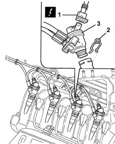

1043BC LPG injector seal check
- Path
- Test > 10 ENGINE UNIT > 1043 LGP TANK AND PIPES > 1043B gpl fuel circuit pipes > 1043BC LPG injector seal check
- Kind
- test / check procedure
- Applies to
- engines: 1.6 16v; all production periods; only with equipment: GPOWER
- Interactive page
- https://sloeber94.github.io/elrnDB-fMltpl/en/#/2892377
Applies to: engines: 1.6 16v; all production periods; only with equipment: GPOWER
Important.
To carry out the test correctly, lower the LPG pressure upstream of the injectors to 5 bar or below. To do this, proceed as described below:
Disconnect the LPG solenoid connector on the pressure regulator.
Set the Gas / Petrol selector to Gas.
Start the engine and wait for the system to switch over to LPG, and then back to petrol.
Switch off the engine.
Connect up the Examiner diagnostic equipment set to 'Control Units' test.
Enter the 'Parameters' environment.
Check that the 'Gas pressure' parameter is 5 bar or below. If the pressure is still high, repeat the cycle.
Disconnect the connector (1) of the injector being tested.
 | Name | Connector |
|---|---|---|
1 | GPL injector |
| Name | Connector |
|---|---|---|
1 | GPL injector |
| Name | Connector |
|---|---|---|
1 | GPL injector |
| Name | Connector |
|---|---|---|
1 | GPL injector |
Remove the fixing clip (2) and remove the injector (3) from its seating, with the pipes connected, making sure not to damage them.
Immerse the nozzle of the injector being tested in a container containing a soap and water solution, and check that there are no leaks, made evident by the continuous emission of little bubbles.

Topics linked from this page (4)
- N073A GPL injector ( ENGINE )
- N073B GPL injector ( ENGINE )
- N073C GPL injector ( ENGINE )
- N073D GPL injector ( ENGINE )